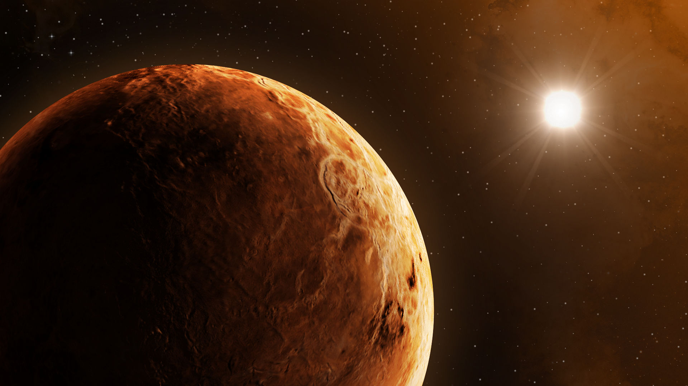

Венера это вторая по удалённости от Солнца планета и шестая по размеру. Она похожа по размерам на Землю, Марс , Меркурий. Это планета земного вида. Она названа в честь древнеримской богини любви Венеры. 
Главная